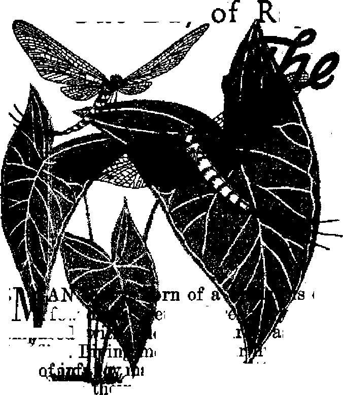

More to it than meets the eye that depends on the columns of the large controlled newspapers
Newsprint Crisis Threatens Free Press
How hoggish tactics of few deny rights of many
What Ails the Public Schools?
The physicians babble prescriptions, but patient uncured
Warfare on Weeds
Seasonal blitz on the garden front
THE MISSION OF THIS JOURNAL
News sources that are able to keep you awake to the vital issues of our times must be unfettered by censorship and selfish interests. "Awake! has no fetters. It recognizes facts, faces facts, is free to publish facts. It is not bound by political ambitions or obligations; it is unhampered by advertisers whose toes must not be trodden on; it is unprejudiced by traditional creeds. This journal keeps itself free that It may speak, freely to you. But it does not abuse its freedom. It maintains integrity to truth.
"Awake I” uses the regular news chanr Is, but is not dependent on them. Its own correspondents are on all cot inenta, in scores of nations. From the four corners of the earth their uncensored, on-thescenes reports cAme to you through these columns. This journal's viewpoint is not narrow, but is international. It is read in many nations, in many languages, by persons of all ages. Through its pages many fields of knowledge pass in review—government, commerce, religion, history, geography, science, social conditions, natural wonders—why, its coverage is as broad as the earth and as high as the heavens,
“Awake!” pledges itself to righteous principles, to exposing hidden foes and subtle dangers, to championing freedom for all, to comforting mourners and strengthening those disheartened by the failures of a delinquent world, reflecting sure hope for the establishment of a righteous New World,
Get acquainted with “Awake!” Keep awake by reading “Awake!”
Published Semimonthly Bt
WATCHTOWER BIBLE AND TRACT SOCIETY, INC.
117 Adams Street Brooklyn 1, N. Y., U. S. A.
N. H. Ignore, President Treasurer Secretary, fieeretartt
Five cents a copy One dollar a year
IttMltUneti should be Mat to oflln Id your cwn-try In compliance with regulations to guarantee safe delivery of money, ftemlttanccs are accepted at Brooklyn from countriea where no office is located, by international money order only. Subscription rates in different countries are here-fiti ted in local currency.
Notice of expiration {with receipt blank) la sent pt least two issues before subscription up as stated.
Change of of address wbciD sent to our office may bo expected effective frilhin tum month. Send your old as well as new address
Offices Yearly Subscription Hale
America. U.S., 117 Adams St., Brooklyn 1, N.Y., 31 Caroline St., 7 Beresford Pl., Strathfield, N.S.W. 6s Canada, 40 Irwin St., Toronto 5, Ontario $1 England, 34 Craven Terrace, London, W. 2 ; South Africa, Bosmont Estate, Cape Town S. Afr.?
Entand aa seccnd-dfiaa matter at BrocHm, N. Y., Act of March 3, 1379. Tripled In IL S. A
CONTENTS
Antielffricfl.l Wave Sleeps over Italy
Vatican Polities Causes Anticlericalism
Communrshs with Vatican bn Later an Pact
Newsprint Monopoly Threatens Free Press
Occupants of the Newsprint Monopoly Pigpen 12
Freedom to Preach Worth All Buffering 16
One Day of Rapture for the May-fly
Chemical Warfare Against Weeds
Poverty-stricken Britain Gambles Away
"Thy Word Is Truth”
Volume* XXVIII
Brooklyn, N-Y,, May 8, 1947
______r1!!?■?!!!!!!*■ .--:*!r:*!*!.'.•fff•.uffff'.••••.,^!.'.!.'.!.', '.!!!!!!!■I*t! flf
Wl I | .1,11 ,i I .1. In I*
Num bar 9
.....tjiM.i mm ii fffi~w
Anticlerical Wave Sweeps over Italy
Why in Italy now the of heated anticlericalism? Why do »o many Catholic pen pie In Italy sympathize with the anticlerical newspaper* that stir up against
the Vatican T What has the Catholic Church done to precipitate a rrli-Eiowa crisis? How Have communism and the this new threat to her prestige? In the anticlerical tide attributable to Communism T Out of Italy itself com* the answers to these and other carrent questions plaguing that unhappy land* On-the atenea report* of two “Awakecorrespondents in that country have bean combined to give readers the feel of the Italian people's pulse on anti clericalism,
ANTICLERICALISM is no new thing to war-ravaged Italy. Examination of her history shows other periods wherein it appeared in the land. Many of the country’s most beloved statesmen and leaders were anticlerical. Giordano Bruno pitted himself against a teaching of a powerful clergy and suffered burning at the stake for his courage. Mazzini was another who gave impulse to the movement of independence that resulted in the establishment of the liberal government, that existed in Italy prior to World War I, and this’ man wrote much about the troublesome, divisive, immoral and politically meddling Roman Catholic Hierarchy. Another was Giuseppe Garibaldi, hailed by the Italian people as the man who united Italy, resulting in its becoming a major power of the world. In his path of uniting the Italians, continually torn by sectional wars and feuds, stood the Catholic Church and its clergy, sustained in power by foreign troops. At a time when he and the, forces seeking to liberate Italy were hard pressed by the troops of the foreign powers, .which had been called in by the pope to prevent the losing of his temporal power. in the land, Garibaldi wrote the following encouragement and exhortation to his followers: “That generation today graying under the burning sun of battle will appear at
Italy’s] next genera
tive front of vour
tion, raised under hatred and executions of priests and foreigners, strengthened by the memory of many . outrages and by the
avenging of many hardships suffered in prison and exile. No one knows how long this period will last in which you find yourself, 0 Italy. But everyone knows that the solemn hour of rebirth is not far off.” (Words of Garibaldi cited by the anticlerical newspaper II Mercante, January 3,
Today, with her cities in ruins and her land ravaged by war, many of
her people homeless, hungry and cold, a great section of the population of Italy is again taking up the cry of these liberty-loving leaders of the past. Italy must have a rebirth of the freedom she lost during the nightmare of fascism. She must not after having come out of the frying pan of one dictatorship fall into the fire of another.
Memories
But one majr ask, How can there be danger of such happening? Has not Italy been liberated and fascism de-
stroyed? The Fascist party as such no longer exists in Italy, but the libertyloving people know that its principles live on. They know that those formerly allied with fascism are still present and active. They remember the arms of the Boman Catholic Church open wide to receive the rising Fascists. They remember the pope's concordat with Fascism in 1929, and that then "the supreme religious authority expressed its pleasure because God had been given back to Italy, and Italy to God”. (Carriere della Sera, October 13, 1944) They remember that at the very time the League of Nations met to consider the Fascist attack on helpless Ethiopia, Osservatore Romano, the Vatican’s newspaper, reported that fiftyseven bishops and nineteen archbishops of Italy sent a telegram of congratulations to Mussolini which read: “Catholic Italy thanks Jesus Christ for the renewed greatness of the country made stronger by Mussolini's policy/' (August 22, 1935) They remember the statement of Cardinal Schuster, of Milan, wherein he declared: “The Italian flag is at this moment bringing in triumph the cross of Christ to Ethiopia to free the road for the emancipation of the slaves, opening it at the same time to our missionary propaganda/’
The people of Italy remember the Hierarchy's blessing of Mussolini's campaigns of aggression, its blessing of Fascist war weapons, its blessing on Italy’s part in securing for butcher Franco a Fascist rule in Spain. The Italian people cannot forget the blessings of high Catholic prelates that regularly accompanied aggressions of the dictators of the Axis powers. The smooth speeches of Catholic clerics may lull distant nations to sleep as regards the church’s past love with her Fascist bedfellow; but on the Italian home front they are only hollow-sounding hypocrisy. The Catholic Church in Italy may no longer support fascism in words, but her actions speak louder and bear the stamp of the Fascist regime from which the land has but so recently been unshackled. In fact, since democracy is the order of the day, the Italian hierarchy perpetuates fascism under the name of democracy. How?
Vatican Politics Causes Anticlericalism
After the destruction of fascism and the giving to the people the opportunity to select their own rulers by democratic voting, there was immediately formed a party under the name of Democrazia-Cristiana (Christian Democracy). To this party flocked all the old-time Fascists that had not been executed by the allies or partisans. Immediately the Catholic Church backed this new party. For the elation of a provisional government, a great campaign swung into action, a campaign into which the church and its clergy threw themselves with a. zest. From the pulpit the people were urged not only to vote for the party's candidates, but also to do everything within their power to see Hiat the party's candidates were elected. Vatican efforts did not stop there, however. New newspapers were formed with the tlier-archy's financial backing and these threw their weight into the battle to re-enthrone a fascism plastered with a "Christian Democracy'’ label. All of the thousands of parish papers did their bit. To all this was added the advertising by thousands of posters hung in conspicuous places all over the land.
On the point of the church’s political campaign the head of the Socialist party had this to say during a recent convention: “There is at this moment in Italy a definite rebirth of anticlericalism that disturbs the ecclesiastical hierarchs . , . And we say, Whence does this rebirth spring? If springs from the fact that in the elections of June 2, 1946, the church made the mistake of intervening openly with spiritual weapons in the political battle.” However, the Socialist party leaders have declared that they are not
anticlerical, and in fact have no sympathy with the anticlerical press now operating in Italy.
Another part of the campaign of the church to win the election for her chosen ones was that of offering material aid in the form of bread, flour and sugar, items very scarce and rationed in Italy, to buy votes. The term "spiritual weapons” applied by the Socialist leader to the political campaign waged by the mighty religious organization is hardly apt in describing this last-mentioned effort of hers to gain power. Indignant at this illegal means of securing votes, the anticlerical paper Don Basilio wrote in its issue of November 10,1946, in an article entitled "To Prison with All Traffickers in Flour”:
We ask formally that the republic’s attorney proceed penally against these clerical organizations that distribute packages of flour to the voters to buy their votes for the Christian Democracy party, and against those who furnish such flour in violation of the ration laws . . . The flour is everybody’s, paid for by everybody and destined to everybody, not just those who vote for the large, land-holding, pontifical Prince Ruffo! . . . Let everyone remember: Whoever offers flour right at the occasion of the election does it to grab the power for those defrauders of the people that tomorrow will make it scarce.
The Anticlerical Newspapers
In view of this desperate campaign of the church to remain in her privileged and powerful position, enjoyed under fascism’s twenty-year tyranny, the liberty-loving people, many of whom are devoted and ardent Catholics, have become disgusted. This disgust has found expression through the appearance and growing popularity of the anticlerical newspapers, which have grown from one in September, 1946, to three in December. Contrary to what one might think, these papers are not Communistic. They favor no one political party above another. Their desire is to see ar Italy free to speak, publish and worship as each may wish to, and to have a government made up entirely of laymen totally free of Vatican influence. Against religion and the Catholics they have nothing, but are definitely against the Hierarchy’s cloaking her political activity under the name of religion. When priests cease their political activity and confine themselves to caring for the spiritual welfare of the people, then the anticlerical newspapers will voluntarily discontinue publishing. Until that time their determination is to fight and expose the hypocrisy and corruption of church and priests so that Italy’s freedom may not again be strangled by these clerics, whom the antielerics term “foreigners”.
True to this determination, each week their papers appear with articles thoroughly documented demonstrating the cupidity of the Hierarchy and her priests, together with the cartoons illustrating satirically all her great riches of gems, money and property in the midst of a starving, homeless, poverty-stricken multitude of Italian people. Especially cutting is their exposure of the church’s complicity with Fascists and Nazis. Numerous photographs have been published showing the present pope posing with Mussolini, or high prelates of the church posing with Nazi and Fascist officials. And in these they are sometimes seen rendering the Fascist salute. These pictures and the statements made in favor of fascism during its reign cannot be successfully denied by the Catholic Church.
On December 22, 1946, an editorial in the anticlerical newspaper Don Basilio gives information as to the aim of the anticlerical movement. It reads:
Our unfortunate nation is facing a great conspiracy. Organized to perfection are all the forces that have always opposed the efforts of those desirous of winning the fundamental freedoms and give society the most advanced forms of civilization. The clerev are
at the head of such maneuvers. Their allies are anybody, hierarchical and conservative parties. The conspiracy led by De Gasperi aims to suffocate the only voice, out voice, which has risen to oppose their dictatorial schemes. The hour has come, therefore, to call together all the forces that wish to defend the freedom . . . Firmly united in the justice of our struggle, we invite ail those wh(? believe in the freedom of Italy to r&Uy around us for the accomplishment of this program:
Denounce the concordat which was stipulated with Mussolini without consulting the Italian people.
Creation of the laity state.
Freedom of thought and of its manifestation.
Laity concession of school and family. The teaching should be done by the state, and the marriage licenses given by the civil courts. The introduction of divorces.
Absolute freedom of religion and the equality of all faiths before the state.
It is interesting to note public reaction to this type of expose of the Roman Catholic Hierarchy as more of an ambitious and meddling political organization than a teacher of religion. The Italian public, of course, are well aware of the truthfulness of the charges of greed, immorality and collaboration with the Fascists and Nazis. Many express their satisfaction with the expose of the clergy given in the anticlerical newspapers and with the freedom measures championed by such publications. After all, the attainment of the aims nt that would only bring the democratizing of the Italian state that many steps nearer to the American form of government. Abolishing the concordat between church and state, creating a state separate from church, public schools separate from religion, marriage licenses by civil authorities, legalizing of divorce, freedom of thought^ freedom of religion—all such desires are reasonable to minds favoring democracy. One of the co-editors of Don Basilio declared: “Other religions besides the Catholic should have the right to carry on their missionary work in Italy if they want?
The Hierarchy Stoops Low
The enraged Hierarchy combats the wave of anticlericalism by excommunicating practically everyone in any way connected with the movement. I^romi-nent Hierarchy spokesmen hurl their vituperative reports and slanders recklessly against all who dare to side in with the anticlerical movement In addition to establishing rival proclerical papers of their own, there have been in-atances> where the Catholic Church has adopted Chicago’s “newspaper war” technique, suyh as heaving bundles of anticlerical papers off trains, and beating up newsstand’dealers who display them. As for meeting and answering the charges made in the anticlerical papers, the Hierarchy Is silent. As always, her comeback is suppression' of speech and press. Having no truth with which to defend herself against this exposure of her corruption, she recently caused the state to arrest the publisher of one of the anticlerical papers on the charge of “vilification of the state religion and its heads”. The trial was held with the conviction and sentencing to two years’ imprisonment of the publisher, which* conviction was based on the Fascist penal code and the concordat made between the pope and Mussolini.
Rabarbavo, a newspaper especially created by the clergy to combat the anticlerical press, defends the application of the Fascist code in suppressing II Polio and condemning to prison its publisher, in the following mariner:
The clergy invoke the Fascist code, the judgment of the magistrate. In this very thing their moral and civil superiority over their critics consist; who, instead, against the opposing press invoke the suppression of their papers and the imprisonment of their journalists. [January 5, 1947]
Almost laughable is their reasoning and accusation that the anticlericals in-
yoke the law of suppression of opposing newspapers and the imprisoning of their journalists. Laughable it is, for the Hierarchy has done in arresting and condemning the director of II Polio the very thing they accuse the anticlerical press of wanting to do. This is really a case of a thief crying out “Stop thief” to distract the people’s attention from his own thievery. The clergy have suppressed the liberty of speech and press of one of their opponents, and then defend their action by accusing their victim of wanting to do the same thing! On the Hierarchy’s use of the Fascist code to sup-Sress freedom of speech and press, the [ilan paper II Mondo Libero, January 6, 1947, comments with strong feeling:
The Holy Inquisition recommences to function: the manager of the weekly II Polio has been sentenced to two years’ imprisonment. We expect to be the next. Was it worth the sacrifice of making life miserable for the Germans SS only to fall into the hands of the Vatican SS ?
Rather, than facing atheistic, the press opposing the Hierarchy reveals a knowledge of the Scriptures rarely manifested by the Catholic Church. Often they contrast the sayings of the church and her priests and also their actions with the words and acts of Christ and the apostles, pointing out how the Roman Catholic Church and her clerics have fallen away from following Christ. With reference to Jesus’ words at John 18: 36, “My kingdom is not of this world,” the anti-clencals say concerning the Hierarchy: “Their kingdom is of this world.” As for themselves', the anticlerics make it plain that they are not conducting a political campaign: £fWe will never go tp Parliament, never take part in politics,” flatly declares one of the co-editors of Don Basilio.
One needs but go about Italy among its people and talk about conditions and religion to see that the anticlerical papers are not the ideas of a few malcontents as the Hierarchy claims, but that they are accurately reflecting the feelings and opinions of a great bloc of the population. These papers do not blame God for the terrible conditions in the earth, neither do they hold Him responsible for the wicked course taken by those claiming to represent Him. So it is that in talking to the people one finds many who bitterly condemn the priests and the Catholic Church, yet who at the same time give a respectful ear to a discussion of God’s Word, the Bible. Their complaint is not against the Lord and His Word, but is against those who hide behind the Lord in order to more easily and freely carry on their’eorrupt practices and political meddling. They know that the priests are not living by the principles of Christ. Hence they demand that priest and church return to teaching religion instead of trying to maintain themselves as a temporal power at the expense of the people’s liberties. When the church withdraws from politics and tends to its religious business, then and then only does it seem that the Italian people will believe that the church represents God. As the matter now stands the Catholic Church in Italy finds its chief supporters among the elder Catholic women.
Communism in Italy
The people have lost confidence in their leaders. Many who have chosen to follow a specific political course have embraced Communism hoping to find in that political party more honesty in its leaders, but the more sincere persons remain dumfounded and bewildered, trying to ascertain the policy of compromise which Communism still practices in Italy. No one can deny that the Communists are very strong in Italy. After twenty years of oppression under the Fascist dictatorship in which the church collaborated, the people are turning to that which they believe the opposite of what they just had. They remember the Communists suffered persecution under
the Fascist regime. They see in Communism that which seems to offer a.hope of a more equal distribution of the wealth, and,.above all, the Communist has always had a reputation of being anticlerical. With these things in mind it is not difficult to understand the swing to Communism.
However, the Italian Communists are not all the same as regards their attitude toward a Supreme Being. One might classify them into three different groups. In one group fall all those who have lost all faith in God and His existence. A second classification would take in the many Communists who still have faith in God and His Word, but are against the church because of her stand with the dictators and her present course of action in Italian politics. The third type are those who believe that the Catholic Church has been established by God as His means of salvation, but who are convinced that she should cleanse herself of politics and corrupt priests. Conversations with many Communists reveal that they are not definitely convinced that Communism is the solution of their difficulties. More or less they have entered the party because for the present it seems the best thing in sight. These persons are still looking to see if there isn't something better in the offing.
There is a strong likelihood that m the future Communism will lose many of its adherents in Italy. As has already been mentioned, many have become Communist because of their anticlerical feelings and the belief that Communism provides a rallying point for them. But now the Communist party shows a tendency to soften its tons toward the church and seems to be seeking a compromise. Constantly they reiterate: ffWe don't love the anticlerical press.” On this statement an anticlerical paper states:
Fine. To tell you the truth, neither do we anticlericals love it a lot . . . Nevertheless, what fault have we if the situation of the country is such that with only an anticlerical journalism . . . can one hope to put an end to invading clericalism which threatens • to stifle even more than in the past every free breath in the nation?
Then the paper asks the Communist party to judge whether or not the happenings of recent days warrant their fear that their liberties are in danger, pointing out that ten out of seventeen deputies voted toinclude in the new constitution the following article: “The relations between church and state are regulated by the Lateran Treaty/' Continuing from the anticlerical paper on this point we quote:
But if ten out of seventeen deputies, namely, the majority, believe impossible to include in a constitution the pact made by Mussolini to strengthen his own dictatorship, and by the Vatican to extend her power over Italy and tramp with the church rite over the liberal state founded in 1870, who can doubt the grave and imminent peril of the country being given over for many years to eome to papal justice? . . ..Opportuneness! There is a lot more involved here. To our point of view, it is a question of urgent and immediate necessity and cannot afford to be postponed, for any reason. [Il Mercante, January 3, 1947]*
From all this we see that anticlerical-ism is strong and rolls through Italy like a tidal wave. It is getting stronger. That the anticlerics are not atheists, but believe the church should get out of politics and stick to its duty of looking after the spiritual needs of the people is manifest. The purpose of their campaign through the anticlerical newspapers js to drive the church out of politics, to cause her to reform, that they can thereafter return to the church and regard it as truly the organization of Christ. In this purpose they are doomed to failure. By her fruits of political intrigue, immorality, corruption, greed, inquisitions and warmongering, the Roman Catholic Hier-~ "■—■ "* ■■ >■■■
* See later news Item on next page that shows that, this Vatican-Mussolini pact was voted Into the new Constitution, with Communist assistance.
arehy has beyond recovery identified herself as of Satan the Devil. She has made herself a part of the kingdoms of this world, with which Jesus would have nothing to do, of which He said His kingdom was no part, and over which He declared Satan the Devil was the god. —Matthew 7:15-23; 4:8-10; John 12:31; 14: 30; 18: 36; 2 Corinthians 4:4.
No, it seems clear that the mighty wave of anticlericalism now sweeping over the tortured little Italian peninsula will not wash dean the bloody skirts of the Vatican and convert her to Christ. (Jeremiah 2:34) “Can the' Ethiopian change his skin, or the leopard his spots ! then may ye also do good, that are accustomed to do evil.” (Jeremiah 13:23) However, there is a flooding wave that will do a washing work of this sordid religious organization. The Roman Catholic Hierarchy claims to have a covenant with death and with hell, to be able by masses for money to transfer dead souls from purgatorial torment to heavenly bliss, to be a refuge in a time of trouble. And in trying to support such contentions she has brought forth a great mountain of religious traditions and lies which have no foundation whatsoever in God’s Word. Behind these falsehoods and under their covering the Roman Catholic Hierarchy seeks to entrench herself and hide unpunished. But Jehovah God’s Word shows that she will be washed out.
Because ye have said, We, have made a covenant with death, and with hell are we at agreement; when the overflowing scourge shall pass through, it shall not come unto us: for we have made lies our refuge, and under falsehood have we hid ourselves. Judgment also will I lay to the line, and righteousness to the plummet: and the hail shall sweep away the refuge of lies, and the waters shall overflow the hiding place. And your covenant with death shall be disannulled, and your agreement with hell shall not stand; when the overflowing scourge shall pass through, then ye shall be trodden down.—Isaiah 28:15,17-21.
That washing wave that rolls over this religious organization entrenched behind lies and a supposed covenant with death and hell does not cleanse the Roman Catholic Hierarchy of her filth. It washes away the mountainous refuge of falsehoods and religious tradition which the Hierarchy has built up and behind which she hides. It leaves her stripped naked before the nations with her doctrines exposed as originating in godless paganism rather than in God’s Word, the Bible. And the source of this overflowing scourge and beating hail that sweeps away her refuge df lies is not anticlerical newspapers. It is the clear “waters of truth” from Jehovah God’s Word.
Communists with Vatican on Lateran Pact
On February 25 the Lateran agreement between the Vatican and Mussolini, made in 1929, was made a part of Italy's new constitution. It recognizes Catholicism as the state religion. It means that the divorce ban will be kept, and that under this Vatican-Mussolini concordat religious education
in public elementary and high schools is obligatory and dictated by the Catholic Church, that salaries of priests and maintenance of Catholics will be subsidized or paid outright by the state. Through taxation Jews, Protestants and other millions of non-Catholics will finance the Catholic religion. Protestant religious leaders and many Italian newspapers saw in the move a curb on freedom of religion and press. The Lateran pact of 1929 restored the temporal power lost by the Vatican in 1870. This Fascist-Vatican accord is now in the new constitution, thanks to the Communists in Italy. Communists held the balance of power in the voting, and threw their weight behind the Hierarchy. Communists appease the papacy to wheedle votes for the coming October election.
THE earth and the fulness thereof belong to Jehovah God, but its resources are often monopolized by hoggish humane. The Creator overlaid large sections of the earth with beautiful green forests. Trees not only clothe the earth with beauty, but provide man with many essential products. One of these is paper, adaptable to numerous purposes. Foremost in this field is newsprint paper. Newsprint is the standard paper used by nearly all newspapers and is the grade of paper upon which this magazine is printed. In 1900 the United States consumed sixteen pounds of newsprint per person. In 1945 the figure jumped to sixty-two pounds per person. Remember, these figures refer to newsprint only, for if all grades of paper were included the consumption would rise to three hundred pounds per person annually. In 1946 the United States used well over four million tons of newsprint, and early figures for 1947 indicate a much larger consumption for the current year. The amount used during last January jumped 20 percent above that of January 1946. The increasing demand for newsprint enhances its commercial value and draws out the worst in men of greed.
Eyes turn toward the source of supply and production. Canada leads the world in producing newsprint. And during 1946
her production was some 5,250,000 tons, which was an increase of 894,000 tons over 1937. However, during 1946 newsprint mills in other countries produced two million tons less than during 1937. In 1926 thirty-eight United States paper mills with a total plant capacity of 1,739,000 tons per year were manufacturing newsprint paper. But in 1946 only six of these mills were still operating, with a capacity of only 680,000 tons. Hence, more and more the United States has turned toward Canada for her supplies of newsprint. From there the United States now obtains more than 75 percent of its requirements, and Canada’s increased production has been outdistanced by the greater demands.
Hoggish Publisher a Corner Market
During the recent global war the United States government effected a fair distribution of available supplies to publishers large and small, and averted monopoly by controlling precious newsprint paper. But the death of government control in the fall of 1946 marked the birth of monopoly. Crowding out the small publishers, the large publishers planted themselves in the newsprint supply trough and gobbled up all the available paper. Some of this they lavishly squandered in a flood of f ulbpage advertisements, and some of it they stored for
future use. Pressure was clamped upon the paper mills, and the mills yielded and became a party to the big business monopoly at the expense of jobbers and small consumers that were considered “less desirable customers”. The longterm contracts of the large publishers with the mill contained “requirement clauses” that threw wide open to the large publisher all the mill’s production that he claims to require. The hasty scanning of any of the large daily public newspapers is sufficient to convince one that the exorbitant requirements are for commercial advertising rather than news reporting. In other contracts the large publishers were granted the privilege and guarantee of the first call on the total output of the paper mill.
Such hog tactics practically ended the open market in paper and stifled opportunities not only for expansion but even for existence of the small publishers. Many small publishers are heing strangled out of operation. Hearst papers in the United States consume 15 percent of the total newsprint used by the nation. Two hundred other large publishers in the United States use 85 percent of what remains. The 17,000 small publishers struggle along o few’ scraps that are left.
The Watchtower Bible and Tract Society, Inc., publishers of Awake! have been getting newsprint from the same paper mill for ten years, during the last seven of which a yearly contract had been annually renewed. Four months prior to the time of the contract’s expiration in 1946, the Watchtower Society was notified that the mill would not renew the contract for the coming year. The reason: large newspaper accounts were “more desirable and suitable”. Like many other small publishers, the Society was cast out to search for newsprint in the open market, a market that had been practically closed off. The Society was forced to stop printing booklets containing Bible treatises.
Government Intervention
In response to the nation-wide call of the small publishers, a Senate subcommittee, was organized to investigate. Several days were devoted to hearings at which the small publishers explained their plight. Culminating the hearing was a closed session with a number of large publishers, the announced purpose being to see what could be done on behalf of the small printers. The result was amazing: A committee of seven men representing some of the largest publishers in America was formed as a result of this closed hearing for the purpose of investigating the cases of the small publishers. The Senate subcommittee had handed over the hopes of existence of the small publishers to the powerful hands of the ones that were already choking them. Ten days elapsed and the seven-man committee reported buck to the Senate subcommittee as follows:
. We re-afflrm the voluntary undertaking of the publishers to do all in their power through local association, and otherwise to see that all newspapers of general circulation, daily and weekly, obtain sufficient newsprint to continue to publish.
With respect to other publications, the committee is of the view that newspaper publishers cannot undertake to provide newsprint for such uses.
The fact that this farcical committee recognized the need of assistance from the large publishers proves that they know their monopolizing of paper has resulted in a shortage endangering the existence of the small publishers. However, they clearly declare their refusal to break their monopoly. Other newspaper associations, such as The Association of Newspaper Editors, idiotically deny that the small newspapers are in danger of closing down because of a lack of newsprint. Their declaration is that their investigations show a sufficient supply of newsprint for large as- well as small publishers. We believe this statement is true. There is an adequate sup-
ply of newsprint for all if fair distribution were followed. But the large publishers have glutted themselves on newsprint and have bloated their papers with advertising that is flagrantly space-wasting, So unjust and discriminatory has become the newsprint industry that it has recently been necessary for the Federal Bureau of Investigation to make inquiiy into the matter. They have made this statement:
For the past several months we have been investigating complaints of a conspiracy among newsprint manufacturers operating in Canada to restrain trade into the United States. These manufacturers, including subsidiaries of American firms, supply approximately 80 percent of the United States newsprint demand. The complainants have alleged that this conspiracy restricts production, fixes prices on exports to the United States and allocates the available supplies to favored newspaper publishers. The Federal Bureau of Investigation has been conducting the investigation to date, but we expect in the near future to proceed furtheriby means of grand jury subpoenas.
Free Press Endangered
The government faces an imposing problein. They face a monopoly that is not only greedy, but sinister. It is a monopoly that has.within its power .the ability to strike down freedom of the press. Freedom of the press can be dealt a death blow just as surely by control of newsprint as by strict censorship. If the columns that carry news reports and editorial opinion and public reaction are controlled by a few powerful interests, the presentation of essentia! news will, be just as narrow and limited and prejudiced as those few interests. On the other hand, if news and opinion are channeled to the public from many sources, the public will hear all sides of crucial questions of the day and they may use their own intelligence in forming their own opinions. It is more than a matter of a cry for help being raised from the choking throats of small publishers. It is a cry to awaken all to the menace that confronts freedom of the press.
Occupants of the Newsprint Monopoly Pigpen
There axe two hogs in the newsprint pigsty. One is the big publishers and the other ia the mill owners. In the illustration on page 10, the one with the hat on is the latter. A report in the New York Times, April 4, tells of Canadian concern about the policy of newsprint manufacturers of that land. Price increases of newsprint are wholly disproportionate to increased manufacturing costs. They have risen twenty -nine dollars a ton, or fully fifty-one percent, since the beginning of last year. This report coming out of Quebec declared that 4<the security holder, who is today rejoicing in fat profits and increased dividends, may well have reason to regret what many here regard as shortsighted price policy”. Combined net profits of six leading Canadian newsprint companies, after all charges and taxes were deducted, were $48,568,307 for 1946, to compare with $14,767,616 for 1945 and $12,884,323 for 1943. The increase for the period is $35,683,984, or 276.1 percent. As of April 1, newsprint advanced another six dollars a ton.
ITFT
,rrow
GRADUALLY the health and strength of America’s public schools have been failing. Now the system lies on its sickbed and many physicians diagnose and prescribe. Congestion in its overcrowded schoolrooms is very bad and its deficiency in books, supplies and equipment as well as teachers has weakened the entire system. In recent months it has suffered more than a dozen convulsions in the form of teachers’ strikes; even the students themselves, in some instances, have marched out of the school buildings on "strike”. When an emergency call is sent out in the form of marches on city halls and State legislatures the sleepy political "physicians” give the patient their usual delayed-action pills, ointments and injections. Little do they realize the trouble is not a local infection, but rather a national malady, the virus of which reaches to the j where it is eating away the inner vitality of the school system that was once America’s pride and strength. It is therefore high time for Mr. and MrS. America, the parents of the 23,000,000 school pupils, who sit at the bedside wondering what ails their beloved educational system, to awake and examine-the symptoms, diagnose the disease, and administer the
proper,treatment before it is too late.
Why in America, where the greatest opportunity has been offered in the way of public education, was it necessary in the recent war to reject 1,704,000 men, 13 percent of the army’s strength, because they lacked a fourth-grade education? Why is it that since the war there are 7,000,000 children between five and seventeen that are not in school? Or why is it that 10,000,000 adults are not able to even read and write? Recently the New York Times made a nationwide survey seeking the answer to these and similar questions. This was followed by a convention at Atlantic City, N. J., of 10,000 of the leading school administrators, who listened for several days as 600 speakers reported from head to foot the ailments of the public schools.
Ailments
The greatest single cause for this crippling condition is said to be the low salaries paid teachers. Teachers have virtually stampeded from their schoolrooms for other jobs that offer more pay. Some 280,000 teachers have left the schools since Pearl Harbor; more than 600,000 since 1939. Ten thousand classrooms have been closed for lack of teachers, and the teachers that have remained are required to teach many more children. A few teachers get between two and three thousand dollars a year, but 28,000 get less than $600 a year, and 197,000 less than $1,200. After teaching for fifteen years one teacher said she got $60 a month for six months of teaching.
In an effort to better their condition teachers have joined the unions, and strikes have followed. The largest and most severe of these was staged in Buffalo, N. Y., where 3,000 teachers walked out for a week, leaving 72,000 pupils to roam the streets. Teachers, on the whole, are not radicals and do hot favor strikes, many are outspokenly opposed, but due to the financial “squeeze” they are in they have become desperate. This open warfare, and the odium it has raised, has had a very demoralizing effect on both the teachers and the pupils.
The question of teachers’ pay brings up another regarding the requirements a teacher should meet in order to teach. At present 125,000 teachers, or 15 percent, ate said to be incompetent because they hold sub-standard certificates. This is twenty times as many as before the war. But how can these be dismissed when there is a shortage of teachers estimated between 125,000 and 500,0001 Nor is there any hope for improvement in the near future. Twenty-two percent of the college students were enrolled in teachers colleges in 1920; 17 percent in 1930; and only 7 percent in 1946,
If the system is to grow stronger teachers must have their job guaranteed; it must not depend on political power. At present only 42 percent of the teachers have this protection, called tenure; 505,000 are unprotected. There must be increases in salary through the years, with old-age retirement benefits, if teachers are to remain on the job. And they must have their “personal rights” unmolested. So say the diagnosticians.
Other complaints have to do with the shortage of equipment. Classrooms are overcrowded and out of date, and corridors and cowsheds are pressed into service. In some’cases there are not sufficient textbooks to go around. Teachers also complain that the books should be revised, and not only the books but also the curriculum should he overhauled.
All of these things are like open, running sores that do not heal, and for which soothing balm in the form of federal financial aid is sought These sores are scattered over the country. There are 1,674 schools that spend $100 a year per classroom; 790 schools spend 60 times this amount. New York spends $179 per pupil; Mississippi, only $35. The national average is $105. The poor states seek federal aid; the rich states are opposed. It is indeed a lopsided nation that spends $2,500,000,000 on its public schools and four times that amount on alcohol and tobacco.
Analysis of the Complaints
First of all, should teachers’ salaries be raised? Those that say “no” argue that teaching is one of the softest jobs in the world, with three months’ vacation, They can have the job, say the teachers that are quitting every day. The holding of 40 to 60 youngsters under control is one of the hardest jobs in the world, and so they want more pay. In 1939 their salary averaged $1,408; now it is up to $1,950, but living costs have gone up that much too. Teachers’ salaries have gone up 31 percent, but wages in other fields have gone up 79 percent, So why should one go to college to get a teacher's job paying $2,000 a year when the fellow that quit school after the sixth grade is making $3,000 as a bricklayer ?
Not only should teachersJ pay be increased, but - some of the injustices should be removed. For example, in Mississippi the salary of the 8,929 white teachers averages $1,108, whereas the average for the 6,236 Negro teachers, doing the same work, is only $398,73. Don’t overlook the 73 cents I
Should teachers be required to have four years of college to teach elementary grades, and,'in addition, a master’s degree for teaching high school? One who advocates this says, “We cannot continue to tolerate emergency teachers. It is just as sensible to recruit midwives to practice medicine just because we need more doctors.” It is questionable whether such advocates have the education of the children at heart or the enrollment in their colleges, which incidentally has dropped from 120,000 to 64,000-
This raises the question, “What are the requirements of a first-rate teacher?” One must have knowledge of the subject to be taught. Sincerity and enthusiasm, and the desire to tell others what one knows, are also necessary for successful teaching. The fourth essential is personality, which is listed as the all-important factor by a number of instructors. Per-
sonality, the ability to “put across” what one is teaching, includes the ability to deal with others without giving offense, sometimes called tact, and the ability to handle schoolroom problems with the pupils’ interest at heart.
What about tenure, advancement pay and old-age pensions for teachers? The least that society should do for the underpaid teaching profession is to give them such guarantees in gratitude for their valuable services. Also, teachers complain that their “personal rights” are invaded. Say they: If it is all right for the parents to set the example for their children by smoking and boozing, why not allow the teachers to give the children the same example?’ Why in the world teachers want to get down in the same wallow as some twentieth-century parents is indeed hard to understand.
Should the school buildings, equipment, books and curriculum be improved? In 1930, 4,395,000 students were attending high school; in 1940, 6,601,440 were attending, and these were only 77 percent of those eligible to attend. There were 28.3 students, on the average, in a class in 1934, but today many classes run over the 150 mark. Such figures fully recommend the expenditure of $10,000,-000,000 during the next decade for buildings and equipment.
The Vital Organs Are Also Diseased
It is not always apparent to the casual observer when the internal organs of the human body are diseased. And so it is with the malady that infects the vital organs, the textbooks and curriculum, of the public schools. Some of the “doctors” that have rushed to the bedside of the suffering school system have prescribed a purgative in order to remove from the books, especially the history books, all “bias”. The folly of this is manifest from a two-year survey just completed on 313 standard textbooks, which shows that so much “bias” has been flushed out of the books that even essential information is now omitted. If it were not such a tragic matter the Jesuits could be complimented on the thorough job they have done in removing aU evidence of their bloody footprints from the pages of the school history books. The ignorance resulting from such removal enabled the Catholic dictators, Mussolini, Hitler and Franco, to almost re-establish the “Holy Roman Empire”. Keep the children ignorant of this history and the same organization will soon be able to overthrow the American government, and with it its public school system. (For further details, see the April 8, 1947, issue of Awake!)
Plenty of criticism could be leveled at the overprogramed, nonessential activities that are packed into the curriculum for the purpose of “enriching” and broadening the pupil’s viewpoint of life. Especially is this true in the high schools. At a time in life when the students are restless, flighty and unstable they are put in a whirl of activity, from morning to night, with homework and social functions piled on to “keep them out of mischief”. What kind of citizens such mass-production, run-of-the-mill methods make is manifest by the delinquent, pleasure-crazy “graduates” that are loosed on society.
The basic and essential principles of education are woefully neglected by the pre.sent system. Thirty percent of those entering college are below the reading level of the elementary schools, and when it is realized how important reading is to obtaining knowledge, whether on the subject of chemistry or on the interpretation of xjausic, it is manifest that the educational system has ‘strained at a gnat and swallowed a camel’. No wonder it is sick!
Instead of teaching pupils how to think for themselves, how to use their own heads, the whole tendency is to feed the minds of the youth with the cooked-up propaganda hash of this old dying world. The principle of individual think-
Ing is destroyed and in its place the youths are regimented to think as a unit or mass* There is no difference between mass "thinking” on Nazi ideologies and mass “thinking" on this new global philosophy of a so-called “United Nations”. Both are regimented, robot thinking. Why not teach the youth the simple processes of individual thinking? Teach them how to solve problems and make decisions without outside influence. Teach them how to analyze and weigh evidence and reach a logical conclusion, and then how to act upon the same. The fundamental three B's of reading, Jriting and 'ritkmetic are still essentials, but are given only a superficial scratching.
The Cure for All Ills
Should federal money be used to help the, states finance the public schools? This is a question that has been debated for many years. The United States spends 1.5 percent of its national income on education, while Great Britain spends twice that amount, and Russia five times as much, or 7.5 percent, for the education of its people. The suggestion has been made that America should spend not less than 5 percent of her income, or between five and eight billion dollars, on her public schools. And since the states are now spending two and a half billion, the suggestion is made that the federal government make up the balance. How-
+■
ever, of the ten bills before Congress that, call for federal aid for the schools, the Taft bill, which is the most likely to be passed, proposes to spend only one-quarter of a billion on education of the youth, and part of that is unconstitutionally earmarked for Catholic parochial schools, in violation of the separation of church and state policy.
Those standing at the bedside of the ailing public school system have prescribed, as a cure, a whole list of fifteen or more remedies. Let them all be given. Raise the salaries of the teachers (some states have already done so), Raise the standards of the teaching profession, lower the moral requirements of the teachers, increase their pensions, build them new schools, give them new equipment, revise the textbooks, overhaul the curriculum, and let the federal government foot the bill. Alas! the patient fails to recover. Schools are a part of this old world and in these “last days” they reflect the fierce times in which we live. Their downwardplunge is only the same trend in which the entire world moves. To reform the schools would be to divorce them from the world. That is impossible. And since the old world is beyond reform, it will be destroyed at Armageddon, In its place the Theocratic government of Jehovah God, the kingdom of heaven, will educate all in the precepts of righteousness.
Freedom to Preach, Worth All Suffering
C From the September 30, 1946, issue of the (Swiss) paper Volksrecht we quote: “In the great Nurnberg Stadium, built by the Nazis, where Hitler used to assemble multitudes of Naris to hear his official announcements and speeches, there on Sunday the so-called “Jehovah's witnesses" held their first convention since 1933. Among those present were large numbers of former prisoners of Nazi concentration camps, whose bondage aggregated a total of some 20,000 years. The leader of the movement in Germany, Rudolf Frank of Wiesbaden, declared in his address that it was no mere chance happening that the first mass assembly in this stadium since the Nazis were ousted should he held by Jehovah’s witnesses and should take place on the very evening before the Nazi leaders were to be executed—those men who were responsible for all the suffering Jehovah’s witnesses endured in Germany. ‘That we should be permitted to live to see this day/ exclaimed the speaker, ‘is worth all the suffering we had to endure P ”
IN Honduras, near Copan, there is a beautiful valley, about eight miles long and two and a half miles wide. Near-by mountains covered with lush vegetation rise to a height of -a thousand feet above the level of the valley. Majestic pines crown their heights. In the valley a dense undergrowth of short palms and bamboo trees spreads in all directions. On the mountain slopes game abounds, deer, wilcj hog, and many smaller animals. In the valley the parrots chatter to the accompaniment of the wild turkey’s gobble and the quail’s notes. The climate is inviting and healthful, warm and pleasant. It is such a valley as might perhaps be found in many places, yet it has an air of mystery and detachment from modern life that gives it an aspect all its own. True, there is a modern town at one end of the valley, but one can turn his back on it, exclude it from his gaze and concentrate on the more intriguing view of the remainder of it.
In the valley there are things that call to mind an ancient civilization, and with little effort the now forsaken scene can be peopled' by the imagination with a festive throng, festive yet solemn, as they gather from all directions and
IT
LVI F
converge upon the center of attraction, a collection of remarkable images, curiously carved and arranged in order upon a large plaza, approached by steps of great width. To one side is a high tower, past which flows a river that beats against the rocky base, threatening to undermine with the passing of time the imposing structure. Another stairway leads to the river and down to the very edge of the waters. The people who congregate in this ancient temple area are quite*familiar with the story of the origin of the religious arrangements: how, many years ago, a great and powerful chief from Yucatan came and conquered the original inhabitants, establishing a civilization that produced these remarkable objects which attract the eye by their curiously and skillfully wrought ornamentation.
Yes, the people worship many things, most of their gods being identified with heavenly bodies with which their wise men are quite familiar, knowing their movements, their rising ,and their setting by intricate calculations, which are all recorded in stone, represented by curiously wrought symbols. Chief among the gods is the sun-god Tonacateculti, who was the father of Tezcatlipoca the moon-god and of Quetzalcoatl the evening star. A more sinister god is the god of death, represented by the vampire bat. The priestly wise men have also devised a complex calendar to keep track of events and to guide them in the matter of preparing the land for cultivation and the planting of various crops, including the “tobaco”, still grown in the valley to this day.
A Closer Look
Let ns draw a little nearer to inspect the images .that attract the populace to this surprising center of religious rite and worship. We note, as we approach, that these images are in the form of stone,pillars, but skillfully .carved, so that the figure of the god itself is surrounded by elaborate scrolls and de-
signs, giving him an imposing appearance, calculated to impress the worshiper, Before many of these pillar-gods there are altars, also carved from stone, with broad flat surfaces, and in many instances containing depressions into which a liquid may be poured, which is then carried off through spiral channels. The superstitious fear of the worshipers is heightened by the fact that the liquid received by these altars is blood, often, if not altogether, the blood of human victims J
For the most part, besides their ornamentation the carved figures have upon them hieroglyphics, inscriptions, or letterings”, finely executed- It appears that the human and well-sculptured figures represent actual personages, doubtless heroes or “saints” of the time gone by and now measurably worshiped because of their exploits which appear to be recorded in the hieroglyphics which are part of the statue.
The monuments known as “altars” are associated, generally, with one or another of the images, though some are oft by themselves. They vary greatly in form and size. Some are small, in the shape of a human head with grotesque face, and have a depression in the top, apparently intended to receive burning incense. Many of the altars are of rather simple design, rectangular or round, but almost always covered with the ever-present hieroglyphics. Some are ornamented, and have no inscriptions. One is in the form of a tortoise, the great block of stone constituting the back laid upon five other stones carved in the form of the feet and head.
As we observe some of the larger images more carefully we note that the ornamentation around the central figure includes smaller faces and figures of curiously wrought animals and other other objects. These, it seems, represent episodes in the life of the hero here practically deified, and the inscriptions on the sides and back of the column tell more about his exemplary 'life.
The Hieroglyphic Staircase
The large staircase, upon closer inspection, reveals hieroglyphics in abundance. Consisting of 63 engraved steps, and each step 100 feet long, the entire group of stairs contains 2,500 individual blocks of hieroglyphics. The stairway is divided into eight grades and is so arranged as to read as a continuous account of some outstanding event.
And there,* in front of one of the greater images, our attention is attracted to a large altar of more than ordinary importance. Global in form, flat on top, and with a depression toward the front, from which two canals in spiral form lead off. It is called the “Bock of the Sacrifices”. The stair seats of the great amphitheater on all sides surround this grim altar. The crowd assembles as the priests prepare for their gory task. Fearful of witnessing the dreaded human sacrifice, we hastily withdraw from the scene of our imagination, and now see only the valley with its dense undergrowth and its surrounding heights of summits crowned with majestic pines, and the whole wrapped in the peaceful warmth of a tropical summer day. But in among the shrubs and trees of the valley we now discern the ruins of that former civilization, the half-cultured, half-savage civilization of the ancient Mayas.
Certain of the temples and edifices of the ancient constructions have been restored, and the government of Honduras is making a national park out of the ruins. Already many tourists are making it a point to stop at Copan to see the ruins. At Tegucigalpa, the capital of Honduras, there is a display of miniature replicas of many of the temples, pyramids, altars and estelas which once filled the valley.
The Mayan peoples, in many respects, lived lives very much like those of more modern nations. They had their sports,
their art, their heroes, their religion, and, finally, they had their wars, which at last destroyed all they had built. Will this experience of the Mayas also be that of present-day civilization ? Already much in Europe lies in ruins, and efforts now to halt the tide of destruction seem
I to bog down more daily. Man has been repeating himself, and will repeat himself until the kingdom of God brings in that true civilization which will not destroy itself, but which shall continue forever.-—Sent in by the Awake! correspondent in Honduras.
A Challenge to Catholic Zeal
THE managing editor of the widely circulated Catholic paper, Our Sunday Visitor, slanderously stated that Jehovah’s witnesses are opposed to organized government and advocated anarchy. A glance at the literature distributed by the witnesses shows their championing of God’s kingdom under Christ, so if Our Sunday Visitor has cast a glance at it the deduction is that this Catholic paper does not consider Christ’s .kingdom “organized government” and views it as an anarchy rather than a Theocracy. And glances Our Sunday Visitor has cast, envious ones. The issue of February 16 said, in part:
Can you .match the missionary zeal of the Witnesses of Jehovah? ... In. spite of their general lack of education, in spite of the comparative smallness of their membership, and in spite of their poverty and their bitter attacks upon all organized religion, this sect has registered probably the greatest proportionate increase of any in America. . . . The secret is to be found in the hitherto unmatched missionary zeal of the disciples of the late Judge Rutherford. They have given to the world a stirring demonstration of the power of propaganda spread on a large scale and with tireless persistence. In the course of a single year the Witnesses distributed more than 1,500,000 books, 11,000,000 pamphlets and 12,000,000 magazines in 88 languages. From 1919 to 1946 they reported the distribution of the staggering and incredible total of 468,000,000 books and pamphlets!
Let lis compare tjiat achievement with our own. A survey of the 13 large Catholic pamphlet publishing companies shows that in 1944 they achieved an output of approximately 17,000,000. Let us be generous and say that the output of all the other smaller publishing companies lifted the total of all the Catholic pamphlets published in 1944 to 25,000,000. This is only a drop in the bucket compared with the distribution achieved by the Witnesses. Because of our vastly greater numbers, we should have distributed not merely 25,000,000 but 765,000,000 pamphlets in order to match the achievement of the Witnesses. In other words, where we are now distributing 1 pamphlet, we must distribute 45.
’ Our Sunday Visitor then outlines a feeble effort for Catholics to make-— feeble because the paper knows that is the best it can hope for. Near the conclusion the article cries out: “Here is a challenge to the zeal and devotion of every Catholic man, woman and child in America. Can you match the zeal of the Witnesses?”
It is not known where Our Sunday Visitor picked up its figures, but, as might be expected, they are inaccurate. The number of Jehovah’s witnesses was greatly exaggerated, and the literature distribution figures were too low. Books and booklets distributed by the Witnesses in 1944 totaled 20,332,955; in 1945, 22,276,530; in 1946, 24,924,413. The total books and booklets distributed since 1919 exceeds 500,000,000. Hence it seems Our Sunday Visitor must harangue for even more zeal from its apathetic flock to match the zeal of true Christians spurred on by Jehovah’s holy spirit.
One
of well s the ves in a
few
eir
t he far ch creatu ost of their
any of these fittle crea-adulthood at dawn and of dusk are cut off in
considered
Mayflies. state __ natures begin with the coming death. It is their one d^y of rapture and they make the most of it.
Because this order of very fragile insects is so short-lived it is called Ephem-erida. At one time they were classified as a part of the Neuroptera order, which consists of more than 2,000 species, but because of their very distinctive mode of life and individual characteristics they were put in a class all by themselves. So far some 470 different living species of May-flies have been identified and though they have their variations, as a group they have similar habits.
The life cycle of these winged creatures is a very interesting one, probably because it is so different from our own cycle. Starting from an egg that has been laid only a short time before in the mud or rocks of a fresh-water stream the larvae hatch out to take up life in a submerged and watery world. They have rather long legs and a well-developed mouth. The antennae are only partially developed, and for a tail they have caudal filaments. Along the sides of their abdomens most species have leaflike
apture for
\\VM7T
tracheal gills that are part of their respiratory system. These gills are in the form of overlapping fans or platelets that are so constructed that they vibrate back and forth, circulating fresh oxygenbearing water around the body.
■ During this period of their lifetime some species crawl about under stones looking for food; others build themselves little mud homes: and still others swim around free of all worries except one, the fear of being pounced upon by a fish. In the great cycle of life these nymphs serve as an important source of food for hungry fish, which, in turn, serve the needs of hungry- men. There are few grubs that are as feverish about new clothes as these larvae, for during this part of their life they may molt or shed their outer garments as many as twenty times.
If food is plentiful the May-flies may mature in a year, but if May passes they spend another full year feeding and growing and waiting. Another year may pass, another May may come and go, while they wait for their appointed time. What unseen powers and forces govern these small forms of life? The temperature of the stream varies little; one summer month seems as appropriate as another. There is little difference in the food, light and heat, yet May-flies wait for their appointed time, and then, as if at the sound of a trumpet call, they all rise out of the water together, millions of them. Such strange phenomenon of life makes one marvel at the handiwork of the Creator,
The Great Day of Ecstasy
Finally the great coming-out day arrives and myriads of these creatures emerge from the water for the first time
In their life. The warm air soon dries them off, their dorsal cuticles split open, and out fly the adults, leaving behind their babyhood. But wait! A few seconds after they take to the air they settle back to earth and look themselves over. Why, their wings and body are covered over with a dull-appearing and very delicate pellicle or membrane which they decide to shed for a much brighter palegreen one that lies beneath. This is their last molting, and it is this peculiar shedding in the adult stage that distinguishes them from other classes of insects.
Some species of May-flies have but a single pair of wings; others have an auxiliary pair behind the main pair which are very large, transparent, and of a net-veined membrane structure. Their antennae are short and bristlelike, and their soft slender bodies end in tails of thread-. like filaments usually three in number. If one looks closely it is observed that their mouths are undeveloped. In fact, they have no mouths, a precaution, perhaps, against the arising of any oral argument that would mar their great day of rapture. May-flies have very prominent eyes with a highly developed sight that permits them to see under all light conditions. This special equipment is not for the purpose of finding food, since they do not eat, but rather to aid them in finding a mate, which is their primary purpose in this stage of life. Fully mature May-flies have paired sexual organs, which is another feature not found in other orders of insects.
In this final stage the May-fly is one of the shortest-lived adults there are. After taking as long as three years to develop from babyhood it generally lives but a single day or night. A few hours and it dies! At the most, some species survive but a few days. No time is to be lost. Whether reaching their maturity in the morning or evening they immediately set about to find their mate. Thereafter they engage in one of the weirdest sort of nuptial dances, consisting of alternate ascending and descending flut-terings in mid-air repeated many times. In the waning hours of life the females lay their eggs either on the surface of the water or, as some prefer, on the bottom of a stream into which they make a final plunge before dying.
Speedy Litigation
C An ancient Siamese law code outlined the procedure to be followed in. “trial by ordeal” with water. The two parties involved were to be submerged beneath water while an officer of the court measured off the time by holding his breath as long as possible. “After he has taken breath- for the third time, four executors of important works will assist in taking the two litigants from the water. If one of them has been unable to bear submersion so long and has emerged from the water before, the executors will withdraw the winner from the water, while the judges will ask the loser for what reason he has come to the surface.” This method of settling a dispute had its merits. Sometimes the first to come up for air, fearing the consequences, would take to his heels. The second to emerge, thinking that the other fellow was still below, would also quickly disappear, whereupon “His Honor” would call the next case.
YOU might as well make up your mind that the weeds in your garden will continue to grow profusely this summer unless you wage a relentless warfare against them. It will be a costly fight too, for you will have to spend much time, energy and money, and if you abandon the warfare you will pay an even greater price in the loss of valuable food crops. Second only tq soil erosion, weeds cause great financial losses every year to the farmer. In the state of Iowa the annual weed bill is estimated at $25,000,000, and for the entire United States the cost is somewhere between three and five billion dollars. Other countries pay a similar bill.
Weeds are nothing more than plants growing where they are not desired, for under natural conditions each plant has its place and none are so wild as to be called renegades. Only when man bounds off an area with the determination that nothing shall grow therein, or only a particular plant shall be cultivated therein, does he find his authority challenged by some 100 species of the 200,000 different plants. Because these tough “outlaws” defy man’s decrees and obey only God’s natural laws they are termed weeds.
Man's fight against weeds has been going on ever since that fateful day when Adam and Eve were cast out of the garden of Eden, and during this time he has tried various ways of reducing the growth of unwanted weeds. The hard, back-breaking method of personally and individually pulling them up was replaced by the hoe and the harrow. Later a study of how seeds are sown led to methods for controlling and reducing the sowing of the weed seed.
Pulling up or cutting down weeds before they have a chance to bear seed reduces the number of weeds immensely. This is because some plants produce not less than 5,000 seeds and some as many as a million. However, if this method of weed control is to be successful to any degree all farmers in a community must work together,* for what does it profit a farmer to diligently kill off the weeds if his neighbor raises a bumper crop of weed seed and allows it to 'blow over the fertile fields of the countryside?
Weed seeds migrate not only by the wind but by water streams, through baled hay, by manure, and' are even mixed in and sown by the careless farmers along with the crop seed. The farmer who desires, to reduce the weeds on his land will therefore sow only the highest grade of seed that has been thoroughly cleaned, and he will do this year in and year out. Experiments have shown that of the 107 species of weed seeds buried in the ground for twenty years 51 of them were still capable of germinating if brought near the surface.
“BW” (Biological Warfare) has been used against weeds for more than thirty years in the Hawaiian Islands. Insects were imported to war on the troublesome weed Lantana, and with great success in certain sections of the Islands. Likewise Australia imported an American insect to feed upon her abundant crop of prickly pears.
In place of the cold steel of the hoe Science News Letter in 1943 told of how the hot blast of a flame-thrower was used to kill off the weeds in fields of sugarcane, corn and cotton. Attachments burning fuel oil, and producing the heat of a blowtorch, were mounted on a tractor and moved down the rows so fast the yonng weeds were singed without damaging the taller crops. Another man developed an “Electrovator” with comblike fingers that move over the ground killing weeds with a high-voltage, low-amperage current at a cost of $10 an acre. A Harvard University professor
discovered that if a thickening agent is mixed with gasoline and spread over weeds it will burn long enough to kill not only the foliage but also the roots.
Chemical Warfare Against Weeds
The use of chemicals as weed killers is a comparatively new idea dating back to about 1930. These herbicides, as they are called, are acids and bases having corrosive and caustic action. Compounds of arsenic, fluorine, iron, zinc, selenium and chlorine, and certain fractions of petroleum, are used. Calcium and sodium chlorides are effective because of their high osmotic pressures. Calcium cyanamide, thiocyanates and sulphuric acid are also deadly chemicals used in this warfare. Such chemicals, however, are destructive of all forms of plant life, and so they are used only to eliminate the weeds that grow in such places as footpaths, roadsides, and on tennis courts.
Solutions of sulphuric acid, iron sulphate and copper sulphate are sometimes used to kill out the broad-leaved charlock weed from fields of cereal crops only because the cereals have smooth, narrow leaves that do not hold the poison. Dandelions are kept down in a lawn by spraying several times during the growing season with a 20-percent solution of iron sulphate. Dog daisies in a hayfield are treated likewise. To make the spray stick to wild carrots portions of molasses are sometimes mixed in. Thistles are attacked with a 10-percent solution of sodium chlorate sprayed 270 gallons to the acre. Bindweed takes a 12.5-percent solution. A 2-percent solution of sulphuric acid at 107 gallons to the acre is also effective. Corn buttercups, spurrey and charlock are killed off with a solution of 150 to 225 pounds of ammonium sulphate per 60 gallons of water to the acre. If wild radishes, while they are still wet following a rain, are dusted with 100 to 170 pounds of calcium cyanide per acre they will soon cease to grow.
These weed-killing chemicals are not without their disadvantages. They are expensive, they are poisonous to handle, they corrode spraying equipment, and they are more or less injurious to the crops. Some are considered fire hazards. It is therefore welcome news to the farmer to hear that new types of organic weed killers are now available that lack many of these shortcomings.
Selective Weed Killer
During the last decade a great deal has been learned about plant “hormones”. These chemicals, though not secreted from glands as in the case of animals, exercise a similar function in the plant tissues in controlling and regulating growth. If such chemicals are administered artificially in minute doses they increase the growth. Root cuttings sprout faster, and pears and apples do not drop off the trees prematurely if treated with these chemicals. Further research then showed that large doses of these same chemicals killed the plants, and so a new phase in chemical warfare against weeds was born.
Chemical compounds, like 2,4 dichlorophenoxyacetic acid and others, are nicknamed 2,4-D for us common people. 2,4-D is the active ingredient in such herbicides as Weedone, Tufor, Weedi-cide, Dandykill and 2, 4-Dow Weed killer. Dupont simply calls their brand 2,4-D. How these chemicals kill is somewhat of a mystery, for instead of suppressing the plant’s growth they speed it up. At first it was thought the weeds grew themselves to death, but now it is believed that chemicals cause the reserved food to be depleted. It takes from one to four weeks for the chemicals to do their work.
These new chemicals are selective killers in that tliev attack the hormone make-up of plants, which varies in different types of vegetation. Weeds in a wheat field are destroyed without damaging the grain. Lawns are unharmed if
sprayed with a killer of dandelions, chickweeds and narrow-leaf plantain. It is definitely known that 2,4-D will kill such weeds as the Japanese honeysuckle, annual morning-glory, bull thistle, giant and common ragweed (which is responsible for 90 percent of the hayfever), pigweed, mustard, trumpet -vine, Virginia creeper, and wild carrots, onions and radishes, sumac, sassafras, locust, poison ivy, and a host of fifty more. But such weeds as the broad-leafed plantain, quackgrass and erabgrass are so tough they are not affected by these chemicals.
Economy is another advantage these new chemicals have over the older types. Once the solution dries on the weeds it is not washed off with rain, nor is a second treatment necessary unless there is a second growth from new seeds. On lawns, golf courses and pastures only a 0.1-percent solution, i.e., one pound to 100 gallons of water to the acre, is required.
These chemicals, however, are not the last word in weed control. They have their disadvantages. While they are not considered poisonous, and dairy cattle do not seem to react adversely to small quantities, yet they are irritant to the skin and should not be allowed to accumulate on the clothing. Their greatest disadvantage is that they are very deadly to vegetable crops as well as cotton and tobacco, therefore great care must be given to see that the spray is not blown on such plants. And because of the lasting effect of these chemicals, at least two months must elapse to give at least two inches of rainfall a chance to wash them out of the soil before planting a crop of vegetables.
All of this emphasizes that man must continue to fight the “thorns also and thistles’’ with all the mechanical, biological and chemical means at his command until Jehovah God removes the curse upon'the ground. (Genesis 3:17,18) Only then will perfect weed control be possible, for then the unfinished earth will be transformed into a glorious paradise.
Poverty-stricken Britain Qanibies Away $ioo a Second
<1 Enough money to pay back the American loan to Britain will be feverishly gambled away in Britain this year. Millions of Englishmen are pouring hillions of dollars nt the rate of over $100 a second into the hands of bookies, pools, and other “takers” in an unprecedented and record-breaking “spree” on the long chance of getting rich quick. The money is spent but the reason why so many are “investing” so much is hard to ascertain. Experts blame the “splurge” on boredom, postwar reaction, increased wages in the face of continued shortages of all types of goods, frustration from petty restrictions, and a “to-devil-with-it-all” attitude.
Horses draw the big money. An estimate on the total that will be staked on horses before the end of the year mounts up to the sum of $1,500,000,000. Another $1,200,000,000 simply goes to the dogs. There are over 100 greyhound tracks in Britain, twenty in London alone. Football pools, dozens strong, will rake in $200,000,000 or more this year. Never before have they heen so popular. Another $1,000,000,000—to make up a grand total of something like $4,000,000,000—will be waged on sweepstakes, boxing, wrestling and other types of athletie contests.—Dispatch Hashed over the wires of INS, toward the close of 1040.
THE great heavenly Father has paternal joy in giving to His only begotten Son a “bride”. She is unusual, not being an individual person, but a body or -company of those who follow His Son's footsteps. These are taken from among mankind, whose nature the Son himself once took on by a miracle of His Father, Jehovah God. The Son sacrificed the human nature-in death, for this prospective bride and other believers of mankind; and from the time that God raised Him from the dead the Son has been a mighty spirit, “the brightness of his glory, and the express image of his person.” He is the “image of the invisible God, the firstborn of every creature”. (Hebrews 2:14; 1:3; Colossians 1:15) In order for these loving followers to be espoused like a chaste virgin to His glorified Son, Jehovah God begets them from above, begetting them by His life-giving spirit, and they have become His spiritual children, called to be the “bride” of His beloved Son. The “bride” company prove their love for the Son of God by copying the example that He left them of faithful service to God. —2 Corinthians 11: 2; 1 Peter 2:21.
Only those creatures will go to heaven who are begotten of God by His spirit and who prove faithful to their espousal to God’s heavenly Son by avoiding fornication or uncleanness with this evil world. No others from among mankind could do so, for heaven is the realm of spirit persons, and the earth is the place for flesh-and-blood creatures. The two are exact opposites of each other: “that which is born of the flesh is flesh; and that which is born of the spirit is spirit.” (John 3: 6) As did their espoused husband, those whom God begets to be the bride company must lay down their human nature, that they may be born in the resurrection to life in the spirit with their beloved Bridegroom. Peter, one of the-bride company, said: “Shortly I must put off this my tabernacle, even as our Lord Jesus Christ hath shewed me.” Paul, another one of the bride company, said: “If the earthly house of our tabernacle be dissolved, we have a building from God, a house not made with hands, eternal, in the heavens. For verily in this we groan, longing to be clothed upon with our habitation which is from heaven.” (2 Pet. 1:14; 2 Corinthians 5:1,2, Am. Stan. Ver.) During the past nineteen centuries the Father, Jehovah God, has been taking out from among men the members of the bride company. By begetting them and making them His spiritual children He has espoused them to His beloved Son, to share His hpavenly life and privileges. They are God’s elect or chosen ones. The “bride” is only a limited company, of. 144,000. (Revelation 7:4-8; 14:1,3) So then, at the end of the world, which is upon us, only a remnant, sufficient to complete the membership of the bride, are yet upon the earth.
When Jesus Christ was on earth, as a partaker of flesh and blood, His friend John the Baptist introduced Him to His first followers. John said: “I am not the Christ, but ... I am sent before him.
He that hath the bride is the bridegroom : but the friend of the bridegroom, which standeth and heareth him, rejoic-eth greatly because of the bridegroom’s voice: this my joy therefore is fulfilled. He must increase, but I must decrease.” (John 3:28-30) John's disciples decreased in number, while those who became disciples of the Bridegroom have increased throughout the centuries, till now the remnant on earth suffices to fill up the yet lacking part of the bridal company. The marriage union of the Bridegroom and His espoused company takes place after His Father, Jehovah, puts Him on the throne to rule. The Bridegroom Son sits in the throne at God's right hand and rules, to mete out destruction to opposers of the divine Government and to extend everlasting life and blessings to those who display goodwill toward God and His Christ and who obey GodJs law .and rule. The truth regarding the life-giving Government is pictured as a stream which issues forth from the throne of God and of His once-sacrificed Son, the Lamb. Seemingly small at its source, it increases in width and depth to the volume of a mighty river. “And he showed me a river of water of life, bright as crystal, proceeding out of the throne of God and of the Lamb, in the midst of the street [of the city].”—American Standard Version at Revelation 22:1,2.
As shown in other Watchtower publications, Jehovah placed His Son, the Lamb, upon the throne A.D. 1914 and sent Him to the holy temple for judgment proceedings in 1918. It is from and after this latter event of 1918 that the marriage of the Bridegroom to His espoused virgin takes place by the resurrection of all those faithful members of the bride that were then sleeping in death. The prophecy of Ezekiel 47:1-5 agrees with Revelation, chapter 22, that it is since 1918 that the river of the water of life-giving truth has been flowing forth from the throne at the temple or house of God. Joel 3:18 tells of the day of the Lord Jehovah, which day began in 1914, in these words: “And it shall come to pass in that day, that the mountains shall drop down new wine, and the hills shall flow with milk, and all the rivers of Judah shall flow with waters, and a fountain shall come forth of the house of the Lord, and shall water the valley of Shittim [the dry unfruitful vale].”
All such beautiful prophetic symbolisms show how the truth must flow forth .with increasing volume to bring to perishing mankind, the message that leads to everlasting life. Jehovah God on His throne is the eternal Fountain of life. His faithful Son, who was sacrificed as the Lamb of God that life eternal might be provided for obedient humankind, is the One by whom the life is extended to men who believe and accept. “And this is the record, that God hath given to us .eternal life, and this life is in his Son.”—1 John -5:11.
The Son of God sends forth the invitation to life-seekers to come to the river of living water of truth. The Son of God is now a mighty Spirit; which means He is invisible to mankind. How, then, does the invitation to life everlasting reach “men of good will” to The symbolic vision at Revelation 22:17 declares that the “hride” joins the Spirit in extending the gracious invitation to those parched with thirst for hfe-satisfying truth. We read: “And the Spirit and the bride say, Come. And let him that heareth say, Come. And let him that is athirst come. And whosoever will, let him take the water of life freely.” Inasmuch as only a remnant of the spirit-begotten ones espoused to the Spirit Bridegroom remain on earth in direct touch with mankind in this dying world, the remnant are the ones that receive the message from the Bridegroom, They then pass it on to all who have ears, that is, the hearing of faith to accept the message and to come. How does the remnant receive the message to preach it to others
ers? The Bridegroom, the Spirit, has received power from His heavenly Father and He communicates the message to the remnant by the spirit or active force. Then the thirsty “men of good will” who hear the message by the remnant are in turn exhorted and privileged to say Come! to others of humankind.
--
Catholic Capers
C A Reuters dispatch of March 22 from Vati-
can City stated that Roman Catholic circles
claimed Hitler’s puppet ruler of Slovakia, the
priest Josef Tiso, would probably he pardoned.
He was, however, sentenced to hang on con-viction of collaboration. Pleas for clemency
denied,' Tiso was hanged early on April 18.
On March 25, from Belgrade, an Associated
Press flash came through: “A source close to
the government said today Vladimir Bakaric,
president of the Croatian republic, had offered
Archbishop Alojzijc Stepinac a pardon if the
imprisoned Roman Catholic prelate would leave the country immediately.”
Uncertainty as to “Successors” of Peter
C On January 19, 1947, the new edition of Annuario Pontificio, the official Vatican listing j\ of the Hierarchy, appeared with six changes in 7 the list of popes. Th^se changes were claimed V as the climax of two centuries of research, and y some of the juggling of supposed popes was v for the centuries separating the apostle Peter’s S death and the flrst actual pope of Rome, name- &
ly, Leo I of A.D. 440. Only unlimited papal &
cheek staves off embarrassment that would (h normally come when it is discovered that two J) of her highly touted “successors of Peter” are A non-existent and four.of them branded “anti J) papi” or illegitimate popes. s'
Pay as You Enter the Five-and'Ten 9
C. The Mary Magdalene Catholic church at « Abbeville, La., has started charging admission s' fee to its performances of masses. Adults will « be nicked ten cents, children five cents. Of w course, big-hearted “Father” Daull explained (s that none would be “refused admittance to the J church for refusal or inability to pay”. But he A is confident that they will pay the cost in J coin rather than the cost in embarrassment. ®
“Holy War” Agitators in Mexico
<L From Mexico city, on April 3, the news comes that the National Sinarquist Union, Catholic Rightist group of strong Fascist leanings, held a rally in the city of Michoacan attended by 30,000 sympathizers. At this rally the offer was mhde by the Sinarquists to “raise 1,000,000 men to fight communism if diplomatic troubles between the United States and the U.9.S.R. should lead to war”. And this is just another whiff of the odious Roman Catholic Hierarchy propaganda that billows out in dark clouds to precipitate a third world storm of war.
Catholics Chided by Bishop
<L The National Catholic Conference on Family Life held in Chicago heard on closing day, March 12, chastening words from a bishop of the Hierarchy. The “Most Rev.” John F. Noll of the Fort Wayne, Ind., diocese, told a conference section that “nearly all the evils of society prevail most where we live and not where Protestants live”. It is in areas where population is eighty percent Protestant that “family life is most wholesome, and where the divorce rate is still low”, Bishop Noll asserted. “On the other hand, where the bulk of Catholics live, one-half o: the marriages end in divorce,” he contrasted.
Better Late than Never?
<L The Catholic Universe, November 22, 1946, reported: “The Holy Father arranged for hot meals to be sent and served to people temporarily homeless after Rome’s floods. The floods, caused by torrential rain, also extended to Vatican City, says Vatican Radio. A few weeks ago prayers for rain were ordered in Rome’s churches. Basements of the radio building Were flooded, but no damage was done. A small fire caused by a short circuit was soon extinguished by Vatican firemen.”
Supreme Court Justice Jackson recently declared what what the world needed was a new set of rules for waging war, “It is perfectly obvious these rules are obsolete as they stand/' he said. In approaching revision of the rules it was Highested that the Ignited States might notify all other signatories of its intention to disregard the existing conventions and agreements under which armies usually fought up until. World War II, at the same time expressing a desire for new laws ; or a proposal could be circulated through some existing international body for general suggestions for revision.
But what the world really needs is what its leaders persistently reject—the kingdom of God under Christ. That Theocratic Government will not give the world new war rules nor initiate cc?u-cation, Under that Kingdom rule nations “shall beat their swords into plowshares, and their spear^ into p run IngJjC 9k spration shall not lift up sword against nation, neither shall they learn war any more. But they shall sit every jnan tinder his vine and under his fig-tree; and none shall make them afraid: for the mouth of Jehovah of hosts hath spoken it”. (Micah 4; 3, 4, Am. Stan. l7fr.) This will bring every man down to earth, and the resistant arrogant militarist, pompous politician and self-exalted clergyman will vanish from the peaceful earthly scenes. They refuse to humbly listen 1 □ Jehovah of hosts, but lie has spoken the word and it will not return void,
Ot»"
“It is written ..
Thus quoting from the inspired Hebrew Scriptures Jesus resisted His religious adversaries on every hand, Kot trusting' to human reasoning. He referred to what was 'Tvricleif’ as a basis for His i’ohisp, As did Jesus in His day, so today the book “Let God Be True’, m itd=L discussion of many beliefs and teachings, refers to the written Word cf God, of which Jt^ius taid “Ihy wwd is truth”.
“let God be True (True”
and learn the Bible truth on such vital subjects as Messiah, hell, trinity, ransom, the church, sabbath, the kingdom of heaven, and many others. Base your hopes on what has been “wrirtwi” in God's Word. Obtain this 320-page, green-hound book by sending in
watchtower
117 Adur» St.
Brooklyn 1, N. Y.
Enclosed. Hud a contribuhon of 35c, Please send to me a copy of the book “ God Be True’*.
Narrti’ ..
Strict .....
Zone 2s o. .......... State „
Debate on peace with Germany continued at Moscow without notable success during the early part of April. The Big Four Foreign Ministers Conference found It difficult to get together on any of the important points under consideration. After having held twenty-eight meetings since the inception of the conference over a month previously, the ministers were at a loss as to how to proceed, for in every subject they took up Molotov’s views clashed with Marshall’s. They differed sharply on- almost everything : economic unity for Germany, reparations of $10,000,000,000 for Russia, Geripan production, a provisional government for Germany, a permanent government for Germany. The subject of frontiers further complicated matters. Should Poland be' allowed to retain the 40,000 square miles of German territory which it had tentatively been “given” at Potsdam in exchange for the half of Poland which Russia had seized early in the war, and which it has no intention of returning? Marshall contended that the drawing of the final boundary line between Poland and Germany was still to be determined. Molotov insisted it had been settled at Potsdam. All the peace conference had to do was to agree. The western frontier of Germany presented further difficulties, involving the
Saar and Ruhr regions. The basin of the Saar (750 square miles) is rich in coal. France wants the Saar. Russia objects. The Ruhr (1,000 square miles) is highly developed industrially. France wants it Internationalized and Russia wants to share in its economic control. Marshall was opposed, insisting the arrangement would interfere seriously with Germany’s recovery as a peaceful democracy. Secretary Marshall proposed a four-power agreement to keep Germany disarmed for 25 years or more. Molotov countered with a plan of his own. April 15 the U. S. minister went to the Kremlin to have a talk with Stalin, Molotov being present. The talk, over an hour in length, was shrouded in secrecy'.
Moves were made in early April to arrange for calling the first special session of the United Nations Assembly with a view to considering a particularly burdensome and thorny problem, the Palestine question. Britain had. long since announced its decision to turn the perplexing subject of Palestine over to the UN, and on April 2 made formal request that a special session be called. The United States, Russia, France and China approved the request, but it must be passed by a majority of the fifty-five, members, of whom many indicated their consent; so it now appears that this first special session will be convened by the end of April.
<$> King George II of Greece died suddenly in early April due to a heart attack. He had been back only a little more than six months from his exile in Eng'-land. In Athens the crowds that gathered around the royal palace acclaimed George’s successor, his brother, sworn in as King Paul I. “Zeto o vasileus,” they shouted (“Long live the king”). But many Greeks did not join in the shouting. Greece was hungry and strife-torn, and not very happy. The change of kings made little difference.
Fighting in Greece
<$> Determined to end the continual onslaughts of guerrillas the Greek government has sent forces estimated at about 15,000 into the territory around Metso-vo. At the same time commandos and infantry landed on Cape Platanon from the sea and pushed inland against guerrilla forces at Mount Olympus and Mount Ossa. Greek paratroopers and rocket-firing planes were attacking the guerrillas, who are supplied, , according to Greek charges, by neighboring Communist states. Severe losses were reported to haVe been Inflicted upon the guerrillas.
<$> The United States acting secretary of state, April 11, announced that a note had been ^ent to Yugoslavia against the stripping of the zone of Venezia Giulia which that country administers. Equipment and property of all kinds is being taken away, without permission of the owners or provisions for compensation, the note charged. The U. S. protested as a signatory to the Trieste agreement.
& In an address (April 6) to celebrate the liberation of Alsace, General Charles de Gaulle, of
France, asserted that should a new tyranny menace the world the United States and France would stand together in opposing It There was no doubt that he referred to Coit) mu n ism. He added: “May this solid certainty strengthen everywhere the minds and hearts of men who are free and Intend to remain so?* The next' day he addressed 60,000 cheering Frenchmen In Strasbourg and called upon the French to organize themselves Into a political party in opposition to' anarchy and dictatorship. Indications were that the general was staging an effective political comeback.
Franco’s Succession Plan
<$> Franco, Europe’s only remaining openly Fascist rnler, is in a difficult position. The U.N. has blacklisted, his government; the Spanish underground opposition is increasing; monarchist, republicans and others want to get rid of him. Franco declared Spain to be a monarchist state and has arranged for a “regency council'* which in ease nf his death would function and require the cabinet and council of state to select a successor, who must swear to uphold his policies and who must also be approved by the Cortes ^ParlUmefit), Monarchists have rejected Franco’s plan of succession. The pretender to the Spanish throne, Don Juan, commented on Franco’s scheme, and said it was "absolutely unacceptable”. Said Don Juan: “The most Important thing is that Franco goes. I am convinced that if Britain and America dealtL with the Spanish question in a practical way it would be solved in three months.”
U.N.-U.S. Trusteeship
in the Pacific
The United Nations Security Council (April 1) voted "unanimously” to give the U. 8, undisputed trusteeship over the three Island chains In the Pacific which were formerly held by the Japanese under a League of Nations mandate. These islands, the
Marshalls, Carolines and Mar Lanas, were developed by the Japanese as strategic bases. The U.N.-U.S. trusteeship practically extends the western borders of the U, S, 5,000 miles. The U. S. was, as a result of conquest, already in possession of the islands, but submitted the matter to the U. N. to make It look right, mentioning incidentally that It would withdraw its submission of the matter if any attempts were made tn amend'tile plau, which includes the right to fortify the islands and to close them to other nations.
Japanese Reparations
<•; Gn April, 3 General Douglas MacArthur was ordered by the U. S. government to begin stripping the first reparatlona from Japan’s industries and transfer them to the victims of Japan's aggression In the Far Epst. Half of these advance reparations will go to China, while the other half will be divined among the Philippines, Netherlands East Indies and British colonial possessions. The action was taken In view of the delay of the Far Eastern Commission to act. The intended recipients of these reparations are said to be in dire need of relief. In the meantime Russia haa been stripping Manchuria to the tune of $2,000,000,000, claiming It as “war booty”. This la considered one of the reasons why China is receiving half of the rep n rat ions being taken from Japan.
?2>213,000 VS* $11,100>000,000
<$> America’s lend-lease account with the Soviet Union shows that the latter received matsrial valued at $11,100,000,000, besides 95 cargo-vessels, value not specified. In reverse lend-lease the Soviet has a credit of $2,213,000. For a year the U, S. has been asking that the account be given some consideration by the Soviet. No response was made to several notes. At last, April 14, the Soviet agreed to negotiate its Lend-lease indebtedness. When Ambassador Novikov returns to Washington discussions are to begin.
Atomic Energy Commission
£ After wrangling over the appointment for 84 days the U. S. Sennte finally confirmed the nomination of David L. LfHentfiaf as chairman of the Atomic Energy Commission, by a vote of 51 to 30. President Truman made the nomination In October, but the long delay resulted from opposition to Mr. Lilienthal on changes of “New Deallsm” and an alleged leniency toward Communism. The other four members of the comm is al on were approved by a voice vote. The commission has charge of the great atomic energy plants at Oak Ridge, Tennessee, and Manford, Washington, and of the secret stock plie of atomic bombs. It algo has supervision over sources of raw materials for the manufacture of the bomb, as well as the direction of 130,000 employees: administrators, scientists, engineers and workmen. The commission’s budget for the year 1947-48 totals $430,000,00(1
Balancing Britain's Budget
<$> Hugh Dalton, chancellor of the exchequer, told Britain’s House of Cota mo ng on April 15 that the nation’s budget for 1947* 48 Is more than balanced. In a budget totaling nearly £3,500,000,* 000 (approximately $14,000,000,000) there is expected to be a surplus of £270,000,000. The government reduced income taxes for wage-earners, especially those in the lower brackets, but increased indirect taxation. Duties 'on tobacco were increased 50 percent to make sure that reduced imports of American tobacco would save $30,000,000 for the year. The budget was dubbed the “no smoking” budget.
Prices
• The President’s Council of Economic Advisers is a three-man board appointed to watch United, States economic trends and to advise the president April 8 President Truman met with the Economic Council to be advised of a very serious price situation. The following day the president called a special cabinet
meeting to discuss the matter, Thursday’s presidential press conference was informed that business was largely to blame for the rise in prices. Either prices must come down, or wages must go up. Business men, said the president, ’ had clamored for an end of price controls and a return to free enterprise. They had their way, and it was up to them to meet the situation. Factors for Inflation were unfilled orders despite record production; three times as much money in circulation as at the beginning of the war; profits and wages at record peaks.
United States Telephone Strike $ The American Telephone and Telegraph Company, controlling as it does 100,000,000 miles of wire, and 26,500,000 telephones In America, la a most Important factor in the economic and social life of the U. S. A strike among its employees greatly interferes with the vital affairs of the land. The telephone workers did strike to get their demand of an approximate 25-percent increase in wages, and numerous other advantages. Talks and negotiations had failed to get anywhere. April 7 telephone operators quit their work all over the nation. Only nine states were unaffected. Some 34,000 workers were on strike. A third of the A. T. and T. Company’s 26,500,000 telephones went out of business. Dial phones continued to function. Long-distance calls were reduced to one-fifth of normal.
The first week in April was, by flat of John L. Lewis, chief of the United Mine Workers, declared to be a week of mourning for the 111 miners who lost their lives in the Centralia (Ill.) mine disaster. The.mourning was to be observed by the soft coal miners not working in the mines, beitfg previously enjoined by the Supreme Court of the U. S. from striking for more substantial reasons. Lewis blamed the government for the disaster* The secretary of the Interior, Julius A. Krug, countered by announcing the closing of 518 of the 2,531 government-operated coal mines until they were declared safe by union committees, who had not previously complained. The next move, by Lewis, was to request that all mines in the nation (except two) be ordered closed until federal inspectors found them safe. The question then was i-
raised whether Lewis was not calling strikes and prolonging them In defiance of the Supreme Court injunction. Judge T. Alan Goldsborough, who Originally imposed a fine of $3,500,000 on the Union for contempt of court, recommended that the full fine (reduced to $700,000 by the Supreme Court) be Imposed. With another fray In the offing, Lewis, on April 12, authorized district leaders of the UMW to send all their men back to work on the following Monday.
U. S. Labor Laws
• Bills that will entirely rewrite federal labor policy were before the House and Senate of the U. S. In early April. These are Intended to drastically restrict the advantages that labor has gained during the past decade or more. The main provisions of the two bills are to outlaw the closed shop and to authorize seventy-five-day Federal injunctions against strikers when they are considered harmful to the “public health, safety or welfare”. The bills also propose to outlaw jurisdictional strikes and boycotts and to ban foremen from collective bargaining.
BUUon-Dollar Budget
• A budget of over a billion dollars for a single city Is news, even though the city is the second-largest In the world. New York city has such a budget for the current fiscal year, which Is larger by far than that of any state. The budget for New York state is only $672,000,000, in comparison. Said the mayor: “The budget I now present is the maximum budget I may make within the constitutional limitation up
on the levying of real estate taxes.” And this after real estate tax evaluations were boosted a billion dollars.
• A tornado of exceptional violence wreaked havoc with life and property in western Texas and Oklahoma on April 9. In one Oklahoma town a hundred blocks of buildings, chiefly residential, were leveled to the ground. Fires broke out and could not be controlled for many hours. Boxcars were blown from railroad tracks. In a Texas town all the buildings along the main street were either blown down or ruined. Difficulties of communication resulting from the telephone strike were Increased by damage done to telephone Unes by the storm. Over a hundred persons were killed, and. a thousand Injured.
On ships homeward bound from the south polar regions the Navy’s Antarctic task force has been studying aerial photographs. These indicate that the Antarctic icecap is retreating more rapidly than was previously realized. Numerous valleys have been discovered that are rocky and barren, without the Ice and snow that covers most of the Antarctic continent. Oases and scattered lakes and mounds have been found. The conviction that the Antarctic is gradually becoming warmer Is strengthened by these discoveries. Fossil remains which have been found there prove that it was once a region of warmth and vegetation. These phenomena together with evidence of the shrinking of glaciers all over the world show that the earth is generally warming up.
New Globe Flight Record
• The Bombshell, silver plane of Milton Reynolds, completed a new round-the-world flight record on April 16, covering. 20,000 miles In 78 hours 55 minutes 56 seconds. The previous record, by Howard Hughes in 1938, was 91 hours 14 minutes for a 14,000-miie course.
WATCHTOWER
117 Ad&nm St.
Brooklyn 1, N. T.
Awake.1 Readers Notice.1
The masses of the people are being lulled to sleep by the tremendous quantities of propaganda stemming from advocates of man rule. If you have read the issues of Awake 1 you have found that men's efforts In every field-of human endeavor are very limited and doomed to ultimate failure- Knowing this you will appreciate obtaining and reading the seven booklets listed below. These booklets, published during the last eight years, . lay an excellent background of fact and Scripture shoving the conditions leading! up to the present struggle for world unity. Notice their titles:
Theocracy
Religion Reaps the Whirlwind Conspiracy Against Democracy Fascism or Freedom One World, One Government
The "Commander to the Peoples"
This combination of seven booklets includes four 64-page booklets and three 32-page booklets of vital information, A contribution of 25c will enable you to obtain these, and, if you wish, to pass them on to your friends. Use the coupon below for ordering.
Enclosed is 25c. Please Mud to me the seven booklets, Theocracy, Religion Reaps the Whirlwindwind, Conspiracy Against Democracy, Fascism or Freedom, “ TAe Kingdom of God Is The “Commander tto the Peoples’’ and One World, One Government.
Name
Street
City ...........-......____________________________„ -.................. Zone No. ........ State .....................
32
AWA.KE!